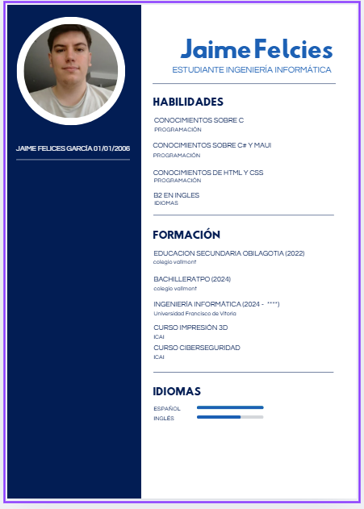

About me
I'm jaime Felices and in this page I'm gonna talk about me:
In highschool i tried to program for the first time, and after that i started to like to program and the use of algorithms to solve problems
and went to diferent courses of programming to develop my skills. Until i went to Francisco de Vitoria where i went to a degree to learn more
about the subject and live of it.
for the future this degree will have a very high employment and a high pay in spain that will allow me to live of something that i love
and have a good life.
This year at UFV has been challenging. I’ve learned new things, which has made it difficult in terms of studying. However, since it’s a subject I enjoy,
it hasn’t made me want to quit or regret my decision. I had studied some programming before, but not at this level, which has helped me better understand the theory and how everything works behind the scenes—not just memorize what each thing does.
I’ve also gained a deeper understanding of computers and everything related to them. Despite all this, I still have a lot to learn in the coming years.

Here is a link to my github acount JaimeFelgar